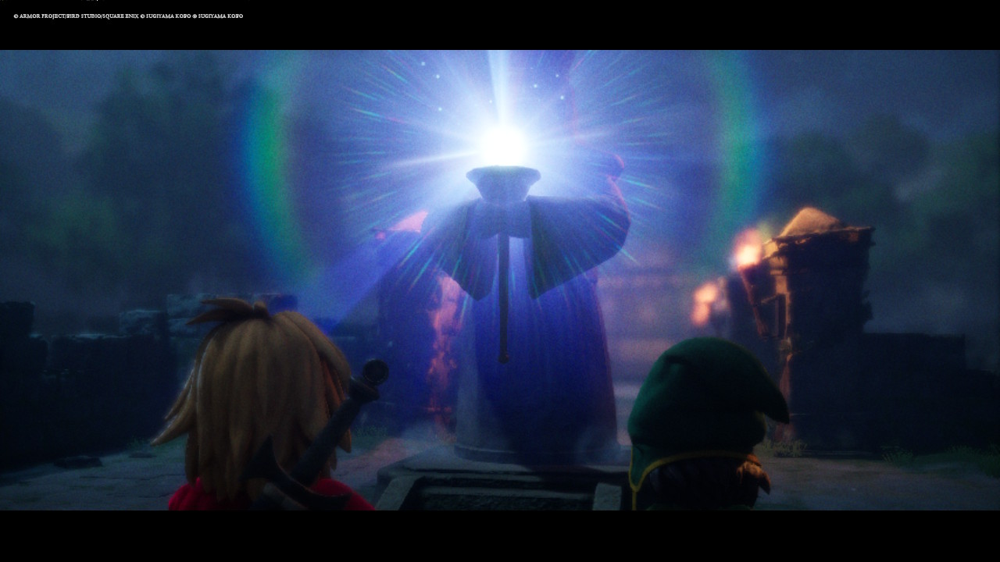
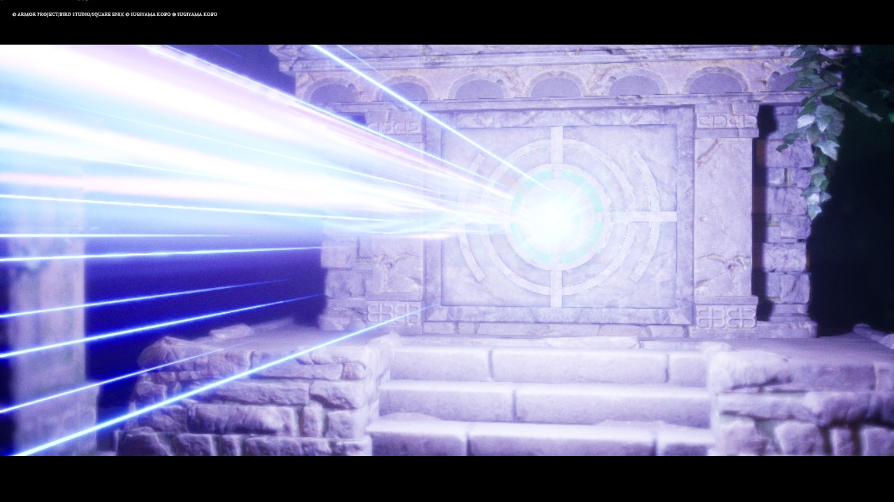
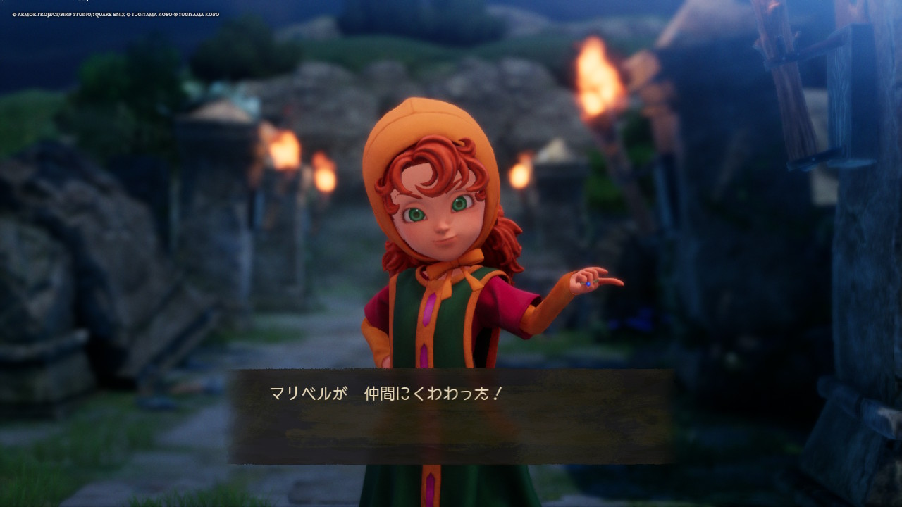

いざ、東の神殿へ！
幾多の試練を乗り越え、とうとう4つの石版を集めきることができました！！
本日は早速、東の神殿へ行き、4つの石版のかけらを賢者の像に捧げに行きたいと思います！！
いやあ、石版のかけら集めの試練は、本当に難しかったですね！！まさか、初回の戦闘から全滅するとは思いませんでしたよ！

神殿の賢者の像に石版を捧げると、まばゆい光が……！この光景、何度見ても鳥肌が立ちます。リメイク版のライティング、本当に綺麗ですよね。
賢者の像が導く先には…

賢者の像に祈りを捧げると、まばゆい光の光線が神殿の扉に！！
キーファとともに覚悟を決めて神殿の中に向かいます！！
ついに、マリベルちゃんが仲間に！
そして、この時を待っていました！！神殿の中に入ろうとすると…！

「マリベルが 仲間にくわわった！」
ついに！ついにマリベルちゃんとの合流です！ 相変わらずのツンデレ気味なセリフも健在で、「これぞドラクエ7！」という実感が湧いてきます。パーティが賑やかになると、戦略の幅も広がって戦闘がグッと楽しくなりますよね。
冒険はまだまだこれから！
マリベルが加わり、ようやく「旅の一行」という形が整いました。 次に待ち受けるのはどんな世界なのか？ 石版の謎は解けるのか？
寄り道ばかりしてしまっていますが（笑）、マイペースにエスタード島の外の世界を冒険していこうと思います！
本日は以上です！またお会いしましょう！ではまた！